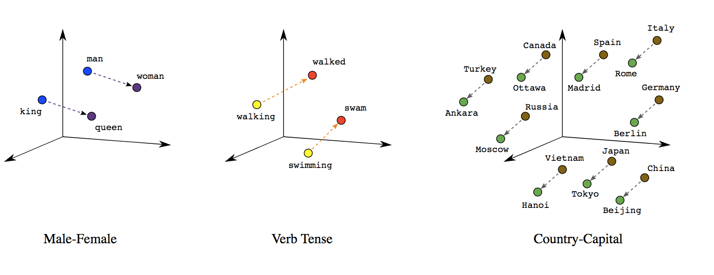
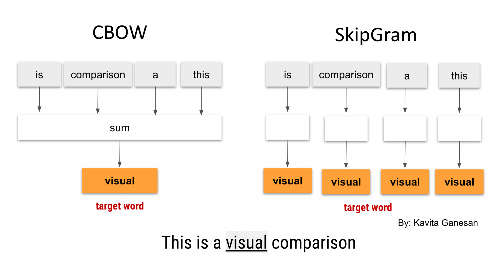
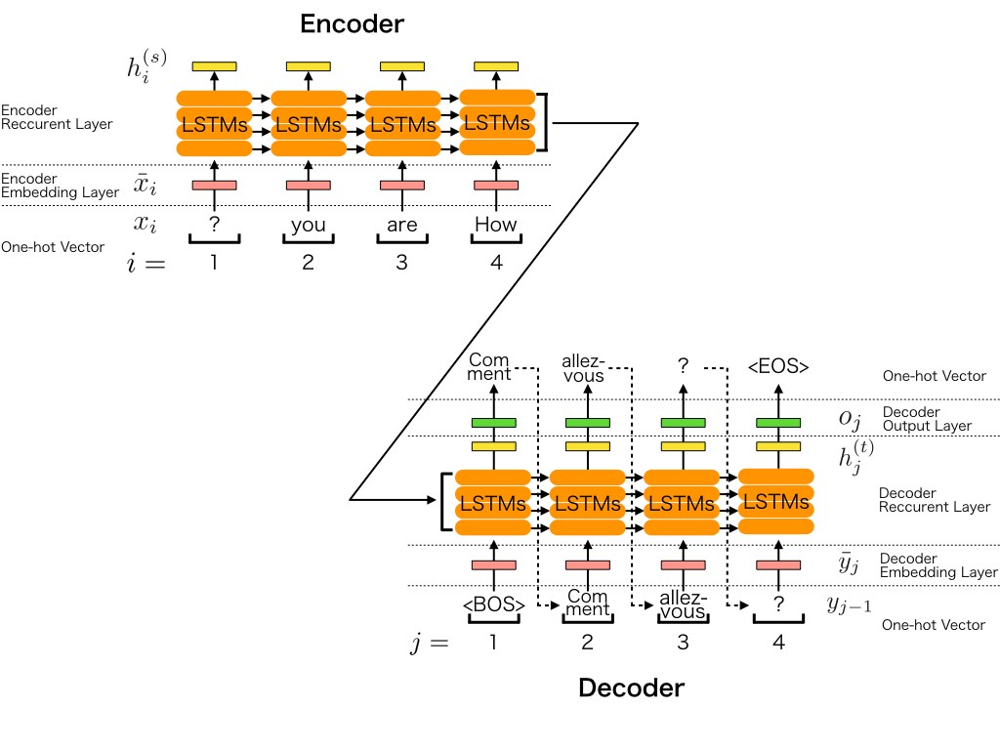
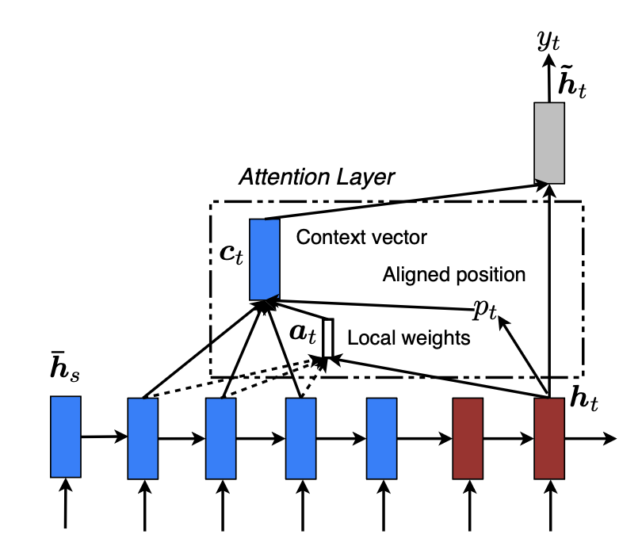

1. Lecture Objectives
This lecture continues sequence modeling by introducing convolution-based temporal models and attention-based encoder–decoder models. We study Temporal Convolutional Networks (TCNs), including causal and dilated convolutions, residual connections, and normalization. We then introduce Seq2Seq architectures, word embeddings (Word2Vec, Skip-Gram, CBOW), and attention mechanisms that address the fixed-context bottleneck. Finally, we examine attention-based encoder–decoder models, including global and local attention mechanisms for improving sequence alignment.
2. Temporal Convolutional Networks (TCNs)
Temporal Convolutional Networks (TCNs) are convolution-based architectures for sequence modeling that replace recurrence with one-dimensional convolutions applied along the temporal axis . Unlike RNNs (and their gated variants such as LSTMs and GRUs), which process sequences sequentially through an evolving hidden state, TCNs compute sequence representations using convolutional filters that can be applied to all time steps in parallel. This design preserves temporal ordering while enabling efficient training and inference, particularly for long sequences.
2.1 Causal Convolutions
A core requirement for sequence prediction and forecasting is causality: the model output at time \(t\) must depend only on inputs up to time \(t\), never on future inputs. TCNs enforce this property using causal convolutions. For a 1D convolution with kernel size \(k\) and stride \(1\), the output at time \(t\) is computed from the current and previous inputs: \[y^{(t)} = \sum_{i=0}^{k-1} w_i \, x^{(t-i)}.\] To ensure the output sequence has the same length as the input while maintaining causality, the input is padded with \((k-1)\) zeros on the left (past side) only. This left-padding guarantees that the convolution never accesses indices larger than \(t\), preventing leakage of future information into the present.
2.2 Dilated Convolutions and Long-Range Dependencies
While causal convolutions preserve temporal ordering, modeling long-range dependencies can require a large receptive field. Stacking standard (non-dilated) convolutions increases the receptive field only linearly with depth, which can become inefficient for very long sequences. TCNs address this using dilated convolutions, which introduce gaps between sampled input positions. A dilated causal convolution with dilation factor \(d\) and kernel size \(k\) is: \[y^{(t)} = \sum_{i=0}^{k-1} w_i \, x^{(t-i d)}.\] Here, the filter accesses \(x^{(t)}, x^{(t-d)}, x^{(t-2d)}, \dots, x^{(t-(k-1)d)}\), allowing the model to incorporate a wider temporal context without increasing the number of parameters. To preserve sequence length under causality, the required left-padding becomes \(d\,(k-1)\) zeros.
A common TCN design grows dilation factors exponentially across layers (e.g., \(d=1,2,4,8,\dots\)) , which expands the receptive field rapidly. For a stack of \(L\) dilated causal convolution layers (stride \(1\)), each with kernel size \(k\) and dilation factors \(\{d_\ell\}_{\ell=1}^L\), a convenient expression for the receptive field length is: \[R \;=\; 1 + \sum_{\ell=1}^{L} (k-1)\,d_\ell,\] meaning the output at time \(t\) in the final layer can depend on inputs from \(t, t-1, \dots, t-(R-1)\).
2.3 Residual Blocks and Stable Optimization
Modern TCNs are typically built from residual blocks to enable stable training at depth . Each residual block contains one or more (dilated) causal convolution layers, nonlinearities (often ReLU), and regularization (often dropout), together with a skip connection that adds the block input to its output. A simplified residual form can be written as: \[\mathbf{h}^{(t)} = \mathbf{x}^{(t)} + \phi\!\left(W_2 \, \phi\!\left(W_1 \mathbf{x}^{(t)} + \mathbf{b}_1\right) + \mathbf{b}_2\right),\] where \(\phi(\cdot)\) denotes an element-wise nonlinearity such as ReLU. The skip pathway helps gradients propagate through many layers, mitigating optimization difficulties (e.g., degradation with depth) and allowing deeper stacks to achieve very large receptive fields.
In practice, when the number of channels changes across layers, a \(1 \times 1\) convolution is often used on the skip connection to match dimensions before addition.
2.4 Weight Normalization
TCNs commonly use weight normalization as an alternative to batch normalization, since batch statistics can be unstable or inconvenient in some sequence settings (e.g., small batch sizes or strict causal evaluation) . Weight normalization reparameterizes a weight vector \(\mathbf{w}\) as: \[\mathbf{w} = \frac{g}{\|\mathbf{v}\|}\mathbf{v},\] where \(\mathbf{v}\) is the direction parameter and \(g\) is a learnable scalar controlling magnitude. This decoupling can improve conditioning and stabilize optimization in deep convolutional stacks.
2.5 Computational Complexity and Parallelization
A key practical advantage of TCNs over recurrent models is parallelization across time. Because convolutional layers apply the same kernel to all positions, computations for all time steps can be performed simultaneously on modern hardware. For a sequence length \(T\), kernel size \(k\), and \(F\) filters, a single convolutional layer typically costs on the order of \(\mathcal{O}(T k F)\) operations, but it can be executed efficiently using highly optimized convolution kernels. By contrast, RNNs must update hidden states sequentially across time steps, creating a strict dependency chain that limits parallelism and can slow training on long sequences.
2.6 Advantages and Limitations of TCNs
TCNs offer several important benefits for sequence modeling. First, causal convolutions enforce correct temporal ordering, making TCNs suitable for forecasting and real-time prediction. Second, dilations provide an efficient mechanism to model long-range dependencies by expanding the receptive field without increasing parameter count dramatically. Third, convolutional computation enables strong parallelism, often leading to faster training and inference than recurrent architectures on long sequences. Finally, residual connections and normalization techniques support stable optimization of deep models.
However, TCNs also have limitations. The effective context length is determined by architecture choices (kernel size, number of layers, and dilation schedule), so extremely long dependencies may require deeper networks or carefully designed dilation patterns. Additionally, some tasks may benefit from the adaptive, input-dependent memory behavior of gated recurrent models, whereas TCNs rely on fixed filters and a fixed receptive field structure once the architecture is set.
3. Encoder-Decoder Architectures
Encoder–Decoder models are widely used for sequence-to-sequence tasks in which the input and output sequences may differ in length, such as machine translation, speech recognition, and text summarization . The central idea is to decompose the problem into two components. The Encoder reads the input sequence and compresses its information into a vector representation called the context vector. The Decoder then uses this representation to generate the output sequence one element at a time.
3.1 Encoder and Decoder Mechanisms
Let the input sequence be a sequence of tokens \[\mathbf{x} = (x_1, x_2, \dots, x_T).\] The Encoder processes the sequence sequentially and produces a hidden state at each time step. In practice, the encoder is often implemented using an RNN, LSTM, or GRU. At time step \(t\), the encoder updates its hidden state according to \[\mathbf{h}_t = f_{\text{enc}}(\mathbf{x}_t, \mathbf{h}_{t-1}; \theta_{\text{enc}}),\] where \(f_{\text{enc}}(\cdot)\) denotes the encoder transition function and \(\theta_{\text{enc}}\) represents the encoder parameters. After the final input token is processed, the last hidden state summarizes the entire sequence and becomes the context vector \[\mathbf{c} = \mathbf{h}_T.\] This vector serves as a compact representation of the input sequence and is passed to the Decoder.
The Decoder generates the output sequence autoregressively. It initializes its hidden state using the context vector and then produces one token at a time. At decoding step \(t\), the hidden state evolves according to \[\mathbf{s}_t = f_{\text{dec}}(y_{t-1}, \mathbf{s}_{t-1}, \mathbf{c}; \theta_{\text{dec}}),\] where \(y_{t-1}\) is the previously generated token, \(f_{\text{dec}}(\cdot)\) is the decoder transition function, and \(\theta_{\text{dec}}\) are the decoder parameters. The probability distribution for the next token is then computed using a softmax layer: \[P(y_t \mid y_{<t}, \mathbf{c}) = \text{softmax}(\mathbf{W}\mathbf{s}_t + \mathbf{b}),\] where \(\mathbf{W}\) and \(\mathbf{b}\) are learnable parameters. The decoder repeats this process until a special end-of-sequence token is produced.
This Encoder–Decoder framework enables flexible mapping between sequences of different lengths, making it a foundational architecture for modern sequence modeling systems.
3.2 Word Embeddings for Encoder-Decoder Models
3.2.0.1
Before sequences can be processed by the Encoder–Decoder architecture, discrete tokens must be converted into numerical representations. This is achieved using word embeddings, which project meaningful elements, such as words in NLP, into a continuous vector space that captures syntactic and semantic relationships . These embeddings position contextually similar words close together, preserving relationships such as “king” to “queen” (Male–Female), “walking” to “walked” (Verb Tense), and “Canada” to “Ottawa” (Country–Capital), as illustrated in Figure 1.

Encoder–Decoder architectures leverage these embeddings to create contextual representations of word sequences, enabling tasks such as machine translation. By embedding tokens in a continuous space, the Encoder can capture syntactic and semantic relationships in the input sequence, while the Decoder uses these learned representations to generate coherent and meaningful outputs. Unlike autoencoders, Encoder–Decoder models focus on transforming input sequences into context-rich outputs, making them essential for sequence-to-sequence applications.
3.3 Word2Vec
A widely used approach for learning word embeddings from large text corpora is the Word2Vec framework . Word2Vec learns vector representations by exploiting the idea that words appearing in similar contexts tend to have similar meanings, a concept rooted in the distributional hypothesis . Unlike traditional bag-of-words (BoW) representations, which encode word counts in sparse vectors without preserving semantic similarity, Word2Vec learns dense distributed representations in which similar words occupy nearby locations in embedding space. Instead of manually designing features, the model learns embeddings by solving a prediction task based on word co-occurrence. Two main training objectives are commonly used : the Skip-Gram model and the Continuous Bag-of-Words (CBOW) model.
For completeness, consider first the simplified one-word context setting, where a single input word is mapped from a high-dimensional one-hot vector \(X \in \mathbb{R}^P\) to a lower-dimensional embedding \(Z \in \mathbb{R}^K\) with \(K < P\). This simplified formulation illustrates the basic mechanism by which embeddings are learned, but it is rarely used in practice because meaningful context typically depends on multiple surrounding words.
Word2Vec models typically learn embeddings using one of two architectures.
Skip-Gram Model
The Skip-Gram model learns embeddings by predicting surrounding context words given a target word . For a word sequence \(\{w_t\}_{t=1}^T\) and a context window of size \(k\), the Skip-Gram objective maximizes the probability of observing neighboring words \(w_{t-k}, \ldots, w_{t+k}\) (excluding the center word) given the target word \(w_t\): \[\sum_{t=1}^{T} \sum_{\substack{-k \le j \le k \\ j \neq 0}} \log P(w_{t+j}\mid w_t).\] The conditional probability is computed using a softmax over the dot product of learned word embeddings. Intuitively, the model adjusts embeddings so that words appearing in similar contexts obtain similar vector representations.
Continuous Bag-of-Words (CBOW)
The Continuous Bag-of-Words (CBOW) model reverses the Skip-Gram prediction task . Instead of predicting surrounding words from a target word, CBOW predicts the target word from its surrounding context. The embeddings of the context words within a window are summed or averaged to form a single representation, which is then used to predict the center word: \[\sum_{t=1}^{T} \log P(w_t \mid w_{t-k}, \ldots, w_{t+k}).\] This objective encourages the model to learn embeddings that capture shared semantic and syntactic properties across context words.

Both Skip-Gram and CBOW produce embeddings that capture semantic relationships and serve as foundational representations for many modern NLP architectures. These learned embeddings form the foundation for Encoder–Decoder architectures, enabling models to represent words in a continuous vector space and generate contextually meaningful sequences for applications such as machine translation and text summarization.
3.4 Sequence-to-Sequence (Seq2Seq) Model
The Sequence-to-Sequence (Seq2Seq) model is a practical implementation of the Encoder–Decoder framework designed to handle variable-length input and output sequences, such as in machine translation . The Encoder processes an input sentence word by word and produces a sequence of hidden states, with the final hidden state summarizing the entire input sequence into a context vector.

As illustrated in Figure 3, let \(x_i\) denote the input token at position \(i\), and let \(h_i\) denote the corresponding encoder hidden state. When the Encoder is implemented using Long Short-Term Memory (LSTM) units, the hidden state evolves as \[h_i = \text{LSTM}(x_i, h_{i-1}),\] where \(h_{i-1}\) is the previous hidden state. After the full input sequence has been processed, the final hidden state \(h_T\) becomes the context vector \[c = h_T,\] which summarizes the entire input sentence.
The Decoder generates the output sequence autoregressively, producing one token at a time. At decoding step \(j\), the Decoder uses the previously generated token \(y_{j-1}\), the previous hidden state \(s_{j-1}\), and the context vector \(c\) to update its hidden state: \[s_j = \text{LSTM}(y_{j-1}, s_{j-1}, c).\] The probability distribution over the next output token is then obtained by applying a softmax layer to \(s_j\). This process repeats until an end-of-sequence token is produced, allowing the model to generate output sequences of arbitrary length.
Seq2Seq models form the foundation of many modern sequence generation systems and paved the way for attention-based and Transformer architectures introduced later.
3.5 Dot-Product Attention
Although the Seq2Seq model performs well on short sequences, it struggles with longer inputs because the entire sentence must be compressed into a single fixed-size context vector, creating an information bottleneck . This bottleneck limits the model’s ability to retain detailed information. To address this limitation, Dot-Product Attention allows the Decoder to dynamically focus on different parts of the input sequence at each decoding step.
Instead of using a single context vector for all output steps, attention computes a new context vector for every decoder step. At decoding step \(j\), the model measures how well the decoder hidden state \(s_j\) aligns with each encoder hidden state \(h_i\). This alignment score is computed using the dot product: \[e_{j,i} = s_j^{\top} h_i.\]
These alignment scores are converted into attention weights using a softmax function: \[\alpha_{j,i} = \frac{\exp(e_{j,i})} {\sum_{k=1}^{T} \exp(e_{j,k})}.\] The attention weight \(\alpha_{j,i}\) represents how much importance the Decoder assigns to encoder state \(h_i\) when generating the \(j\)-th output token.
The step-specific context vector is then computed as a weighted sum of the encoder hidden states: \[c_j = \sum_{i=1}^{T} \alpha_{j,i} h_i.\]
This dynamically computed context vector \(c_j\) replaces the single fixed context vector used in basic Seq2Seq models. The Decoder uses \(c_j\) together with its hidden state to generate the next output token. By recomputing the context at each step, attention enables the model to selectively focus on the most relevant parts of the input sequence, significantly improving performance on long sequences.
Dot-product attention forms the basis for modern attention-based models and serves as the foundation for Transformer architectures introduced later .
4. Attention-Based Encoder–Decoder Models
While dot-product attention improves the basic Seq2Seq framework by allowing the decoder to focus on different encoder states at each output step, more structured attention mechanisms can further improve alignment quality and translation performance. In particular, Luong et al. proposed two broad classes of attention-based models: global attention, which attends to all encoder hidden states, and local attention, which restricts attention to a smaller window of source positions . These two variants differ in how the context vector is computed and in the trade-off they make between computational cost and alignment flexibility.
At decoder step \(t\), let the decoder hidden state be \(\mathbf{s}_t\), and let the encoder produce source-side hidden states \(\mathbf{h}_1, \mathbf{h}_2, \dots, \mathbf{h}_T\). In both global and local attention, the goal is to construct a context vector \(\mathbf{c}_t\) that summarizes the source information most relevant for predicting the current output token. This context vector is then combined with the decoder hidden state to form an attentional hidden representation: \[\tilde{\mathbf{s}}_t = \tanh\!\left(\mathbf{W}_c[\mathbf{c}_t;\mathbf{s}_t]\right),\] which is then used to produce the output distribution: \[P(y_t \mid y_{<t}, x) = \text{softmax}(\mathbf{W}_s \tilde{\mathbf{s}}_t).\]
4.1 Global Attention
In the global attention model, the decoder considers all encoder hidden states when forming the context vector . At decoding step \(t\), an alignment score is computed between the current decoder hidden state \(\mathbf{s}_t\) and each encoder hidden state \(\mathbf{h}_i\). In the simplest dot-product form, the score is \[e_{t,i} = \mathbf{s}_t^\top \mathbf{h}_i.\] These scores are normalized with a softmax to form attention weights: \[\alpha_{t,i} = \frac{\exp(e_{t,i})}{\sum_{k=1}^{T}\exp(e_{t,k})}.\] The context vector is then computed as a weighted sum of all encoder hidden states: \[\mathbf{c}_t = \sum_{i=1}^{T} \alpha_{t,i}\mathbf{h}_i.\]
The key advantage of global attention is that it allows the decoder to examine the entire source sequence at every output step. This can yield strong alignment quality because the model is free to attend to any input position when generating the next token. However, this flexibility also comes with higher computational cost, especially for long input sequences, since attention weights must be computed over all encoder states at every decoding step.
Interactive Notebook: Section 3 — Local vs Global Attention
Click any token as the query and compare global (all-positions) vs local (window D) attention scores. See the full NxN attention heatmap for both modes.
4.2 Local Attention
Local attention reduces the computational burden of global attention by restricting the decoder to attend only to a small subset of encoder states . Instead of computing attention over the full source sequence, the model first predicts an aligned source position \(p_t\) for the current decoding step and then attends only to encoder states within a window centered at that position.
If the attention window has radius \(D\), the context vector is computed over the limited range \[i \in [p_t - D,\; p_t + D].\] Thus, the local context vector takes the form \[\mathbf{c}_t = \sum_{i=p_t-D}^{p_t+D} \alpha_{t,i}\mathbf{h}_i,\] where the attention weights are computed only within this window.
This restriction makes local attention more efficient than global attention, since the model no longer needs to compare the decoder state with every encoder state. At the same time, it preserves differentiability and usually retains strong alignment performance. In practice, local attention often provides a useful compromise: it is cheaper than global attention while still allowing the model to focus on the most relevant part of the source sequence. Luong et al. report that local attention can achieve performance comparable to, and in some cases better than, the global approach .

4.3 Discussion
Both global and local attention address the main limitation of the basic Seq2Seq model, namely the fixed-context bottleneck. Instead of relying on a single encoder summary vector for the entire output sequence, the decoder computes a new context vector at each step. Global attention provides maximum flexibility by considering all source positions, whereas local attention improves efficiency by narrowing the search to a neighborhood around a predicted alignment point. These ideas laid important groundwork for later attention-based models and helped motivate the transition from recurrent Seq2Seq architectures toward fully attention-based Transformer models .

6. References
[]
Y. Bengio, R. Ducharme, P. Vincent, and C. Janvin. A neural probabilistic language model. Journal of Machine Learning Research, 3:1137–1155, 2003.
T. Mikolov, K. Chen, G. Corrado, and J. Dean. Efficient estimation of word representations in vector space. arXiv preprint arXiv:1301.3781, 2013.
T. Mikolov, I. Sutskever, K. Chen, G. Corrado, and J. Dean. Distributed representations of words and phrases and their compositionality. Advances in Neural Information Processing Systems (NeurIPS), 2013.
Z. S. Harris. Distributional structure. Word, 10(2–3):146–162, 1954.
K. Cho, B. van Merriënboer, D. Bahdanau, and Y. Bengio. On the properties of neural machine translation: Encoder–decoder approaches. SSST-8, Eighth Workshop on Syntax, Semantics and Structure in Statistical Translation, 2014.
I. Sutskever, O. Vinyals, and Q. V. Le. Sequence to sequence learning with neural networks. Advances in Neural Information Processing Systems (NeurIPS), 2014.
D. Bahdanau, K. Cho, and Y. Bengio. Neural machine translation by jointly learning to align and translate. International Conference on Learning Representations (ICLR), 2015.
M.-T. Luong, H. Pham, and C. D. Manning. Effective approaches to attention-based neural machine translation. Proceedings of EMNLP, 2015.
T. Salimans and D. P. Kingma. Weight normalization: A simple reparameterization to accelerate training of deep neural networks. Advances in Neural Information Processing Systems (NeurIPS), 2016.
S. Bai, J. Z. Kolter, and V. Koltun. An empirical evaluation of generic convolutional and recurrent networks for sequence modeling. arXiv preprint arXiv:1803.01271, 2018.
A. Vaswani, N. Shazeer, N. Parmar, J. Uszkoreit, L. Jones, A. N. Gomez, L. Kaiser, and I. Polosukhin. Attention is all you need. Advances in Neural Information Processing Systems (NeurIPS), 2017.